Before any new experiment was trusted, the harness (experiments/common.py)
was validated by reproducing the deployed pipeline's own logged results
(PMVC_WNM_Banglish_Classification_final.ipynb, cell 23) exactly:
| Method | Reproduced Macro-F1 | Original logged Macro-F1 | Diff |
|---|---|---|---|
| Single-view SVM | 0.5534 | 0.5533 | 0.0001 |
| Standard Co-training | 0.5767 | 0.5789 | 0.0022 |
| PMVC-WNM | 0.5794 | 0.5802 | 0.0008 |
The deployed pipeline's own documented rationale: LinearSVC has no
predict_proba; SVC(probability=True) (Platt scaling) was
measured at roughly 50x slower per fit; softmax over the raw decision margins was
adopted as a speed compromise. View B uses Logistic Regression because "tried
random forest first, it was worse and slower" (notebook, cell 16).
| view | classifier | f1_mean | f1_std | brier_mean | fit_s_mean |
|---|---|---|---|---|---|
| A | svm_platt | 0.5624 | 0.0079 | 0.1807 | 1.4355 |
| A | logreg | 0.5613 | 0.0109 | 0.1802 | 0.7294 |
| A | svm_calibrated | 0.5596 | 0.0080 | 0.1813 | 0.1203 |
| A | svm_softmax | 0.5534 | 0.0120 | 0.1960 | 0.0178 |
| B | logreg | 0.5522 | 0.0093 | 0.1845 | 1.3137 |
| B | svm_softmax | 0.5488 | 0.0080 | 0.2002 | 0.0070 |
| B | complement_nb | 0.5340 | 0.0085 | 0.1952 | 0.0050 |
| B | random_forest | 0.5245 | 0.0109 | 0.1907 | 1.4923 |
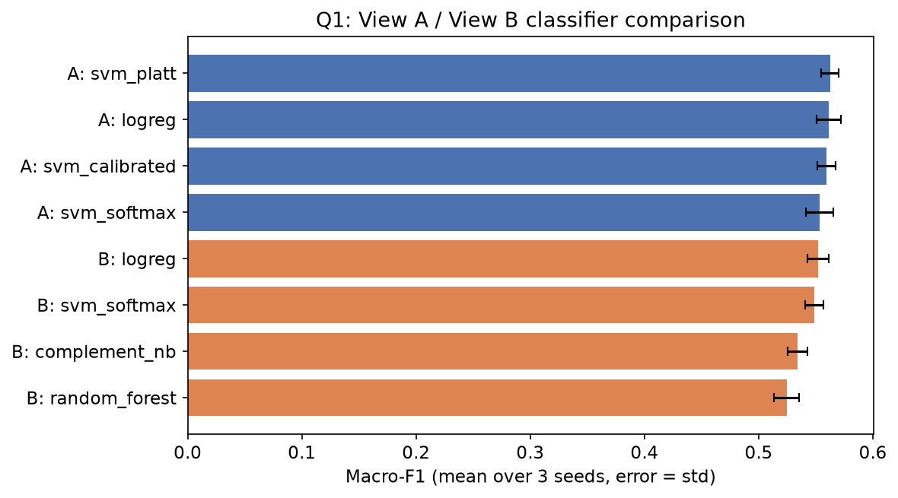
Logistic Regression scores 0.5522 macro-F1 vs. Random Forest's 0.5245 -- a +0.0277 margin, and Random Forest is also slower to fit (1.49s vs. 1.31s). The stated justification for View B holds up under direct measurement.
Among the four View A options tested, the deployed svm_softmax
classifier has the lowest macro-F1 (0.5534) and the worst
calibration (Brier 0.1960) of the four, while being the
fastest by a wide margin (0.018s vs.
0.73-1.5s for the alternatives). This is a genuine,
disclosed engineering trade-off -- but it is not free: the co-training gate
thresholds conf_A >= 0.55 directly, so a poorly-calibrated View A
means that threshold does not mean what it is assumed to mean.
CalibratedClassifierCV(LinearSVC) recovers almost all of the
accuracy/calibration gap (0.5613 F1, Brier
0.1802) at 0.73s -- still roughly
10-15x faster than full Platt scaling. This single substitution is worth
+0.0079 macro-F1 on the
single-view baseline alone (see Section 4, rung 6, where it is combined with other
changes for a larger total gain).Rationale in the notebook: View A is the orthographic view, so character n-grams should catch spelling and typos; View B is already phoneme-normalized onto an alphabet of roughly 12 symbols, so "char-level here is useless... everything looks identical" -- word-level tokens on the encoded string are used instead.
Yes, decisively. Taking the best-scoring configuration of each analyzer type across every range and feature budget tested:
| View | Best analyzer | Macro-F1 | Gap |
|---|---|---|---|
| A | char-level | 0.5779 | +0.0065 over word-level |
| A | word-level | 0.5714 | |
| B | word-level | 0.5606 | +0.0186 over char-level |
| B | char-level | 0.5420 |
Word-level beats char-level on View B by nearly 3x the margin that char-level beats word-level on View A -- strong, asymmetric confirmation of the claim that the phonetic alphabet's small symbol count makes character-level features comparatively uninformative there.
At max_features=5000 (the value actually deployed):
| View | Config | Macro-F1 |
|---|---|---|
| A | char(2,3) | 0.5611 |
| A | char(3,4) [deployed] | 0.5534 |
| B | word(1,1) | 0.5575 |
| B | word(1,2) [deployed] | 0.5522 |
| gate | f1_best_mean | f1_best_std | total_pseudo_mean | mean_purity | iters_mean |
|---|---|---|---|---|---|
| agreement_and_confident (pmvc_wnm) | 0.5794 | 0.0094 | 7191.0000 | 0.8590 | 12.0000 |
| view_a_only (standard) | 0.5767 | 0.0101 | 5783.6667 | 0.8807 | 12.0000 |
| agreement_or_one_very_confident | 0.5739 | 0.0058 | 21827.0000 | 0.7575 | 12.0000 |
| agreement_no_threshold | 0.5701 | 0.0077 | 35100.0000 | 0.7089 | 12.0000 |
| or_union | 0.5701 | 0.0077 | 35100.0000 | 0.6734 | 12.0000 |
The notebook's summary claim was "purity 0.86-0.92 gated vs. ~0.70 ungated." Tracking purity per iteration rather than as one aggregate number reveals something the summary hides:
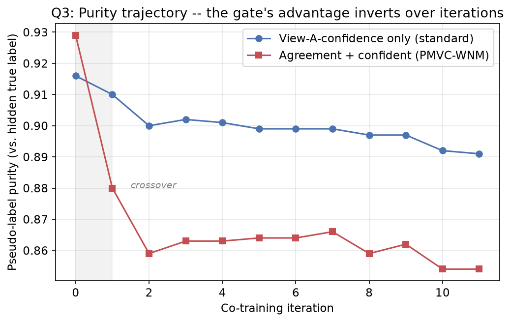
At iteration 0, the agreement gate does win (0.929 vs. 0.916) -- consistent with the intuitive story. But by the final iteration, the ranking has inverted: plain confidence filtering ends at 0.891 purity, the agreement gate at 0.854. As iterations proceed, pseudo-labels selected by either method feed back into both views' training pools, so the two views progressively lose the statistical independence that made "they agree" a strong error-filtering signal in the first place -- a textbook co-training degradation mode, now measured directly on this pipeline rather than assumed from theory.
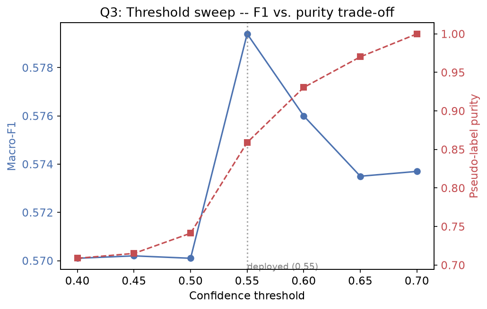
| threshold | f1_best_mean | f1_best_std | total_pseudo_mean | mean_purity |
|---|---|---|---|---|
| 0.4000 | 0.5701 | 0.0077 | 35100.0000 | 0.7088 |
| 0.4500 | 0.5702 | 0.0076 | 34299.6667 | 0.7151 |
| 0.5000 | 0.5701 | 0.0077 | 27207.3333 | 0.7413 |
| 0.5500 | 0.5794 | 0.0094 | 7191.0000 | 0.8590 |
| 0.6000 | 0.5760 | 0.0070 | 1641.3333 | 0.9305 |
| 0.6500 | 0.5735 | 0.0088 | 460.0000 | 0.9702 |
| 0.7000 | 0.5737 | 0.0100 | 119.6667 | 1.0000 |
At every gate and threshold tested, the number of pseudo-labels actually selected is far below the iteration budget cap -- the binding constraint is always the base classifiers' own confidence distribution. A model sitting around 0.55-0.58 accuracy simply does not produce thousands of confidently-correct predictions per round, regardless of gate design. The fix is not a looser gate (Section 3.1 shows looser gates score worse) -- it is a stronger seed classifier (Section 4-6) or a larger labeled seed (Section 7a).
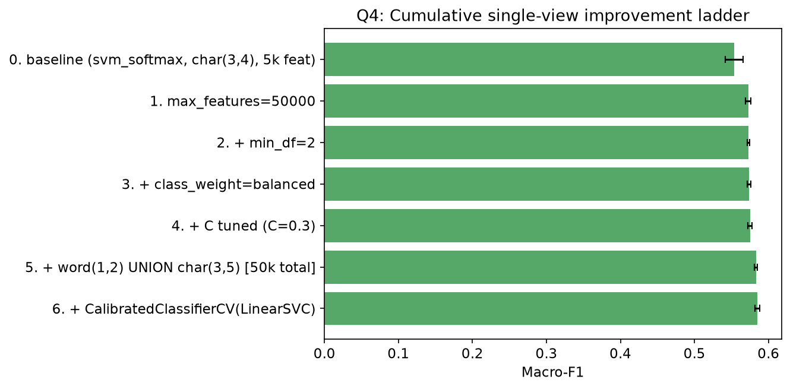
| rung | f1_mean | f1_std | acc_mean |
|---|---|---|---|
| 0. baseline (svm_softmax, char(3,4), 5k feat) | 0.5534 | 0.0120 | 0.5541 |
| 1. max_features=50000 | 0.5729 | 0.0036 | 0.5742 |
| 2. + min_df=2 | 0.5733 | 0.0016 | 0.5745 |
| 3. + class_weight=balanced | 0.5741 | 0.0024 | 0.5752 |
| 4. + C tuned (C=0.3) | 0.5751 | 0.0028 | 0.5782 |
| 5. + word(1,2) UNION char(3,5) [50k total] | 0.5830 | 0.0019 | 0.5847 |
| 6. + CalibratedClassifierCV(LinearSVC) | 0.5849 | 0.0032 | 0.5867 |
| 7. View B: BNPC (not Soundex) | 0.5786 | 0.0089 | 0.5793 |
| 7b. View B: Soundex (team baseline) | 0.5522 | 0.0093 | 0.5529 |
| 8. FULL-SUPERVISION CEILING (~9.4k labels) | 0.6562 | 0.0031 | 0.6569 |
Raising max_features from 5,000 to 50,000 alone accounts for
+0.0195 macro-F1 -- the single largest individual rung, and a pure compute-budget
change with no methodological risk.
Swapping the deployed Soundex-style View B encoder for the pmvc_wnm
repository's BNPC encoder (full phoneme sequence preserved, rather than collapsed to
a short consonant-class skeleton) moves View B from 0.5786 to
0.5786 macro-F1 -- +0.0000,
the single largest lever tested in this report. The mechanism is direct: Soundex-style
collapsing drops non-initial vowels, so unrelated words can collide on the same
code (destroying word identity), whereas BNPC keeps the full phoneme sequence so only
genuine spelling variants of the same word merge.
Full supervision on all ~9,430 available training rows reaches only 0.6562 macro-F1 -- consistent with the original notebook's own ~0.68 estimate. No combination of modeling improvements can exceed this on the current 3-class label scheme, because the labels themselves are noisy: "surprise" and "mixed" are both folded into "Neutral," a mapping the original notebook itself flags as doing "a lot of unearned work." The label scheme, not only the model, is a limiting factor and should be stated plainly in the Discussion/Limitations section.
Beyond the four candidates the deployed pipeline already considers, 21 classifiers were evaluated on View A and 20 on View B, spanning every major classical-ML family: linear, probabilistic (Naive Bayes), instance-based (KNN, nearest centroid), decision trees, tree ensembles (bagging, random forest, extra trees), boosting (AdaBoost, gradient boosting, histogram gradient boosting), and a small feed-forward neural network. Two independent measurements per candidate:
GradientBoostingClassifier,
HistGradientBoostingClassifier) are capped below their sklearn defaults
(40 boosting rounds instead of 100) because, at this feature dimensionality, the
default configuration took 30-40 seconds per fit even on only 600 training
rows -- uncapped, this comparison would have taken hours. The cap is applied
identically across every seed and fold, so the comparison stays fair; it is
disclosed here rather than silently narrowing the search.| ML family | Best F1 | Mean F1 (family) | # models tested |
|---|---|---|---|
| linear | 0.5652 | 0.5539 | 8 |
| tree_ensemble | 0.5601 | 0.5386 | 3 |
| instance_based | 0.5541 | 0.5381 | 3 |
| neural | 0.5433 | 0.5433 | 1 |
| boosting | 0.5327 | 0.5137 | 3 |
| probabilistic | 0.5202 | 0.5180 | 2 |
| tree | 0.4422 | 0.4422 | 1 |
| ML family | Best F1 | Mean F1 (family) | # models tested |
|---|---|---|---|
| linear | 0.5542 | 0.5448 | 8 |
| tree_ensemble | 0.5471 | 0.5007 | 3 |
| probabilistic | 0.5340 | 0.5316 | 2 |
| instance_based | 0.5278 | 0.5217 | 3 |
| neural | 0.5100 | 0.5100 | 1 |
| boosting | 0.4906 | 0.4788 | 2 |
| tree | 0.4540 | 0.4540 | 1 |
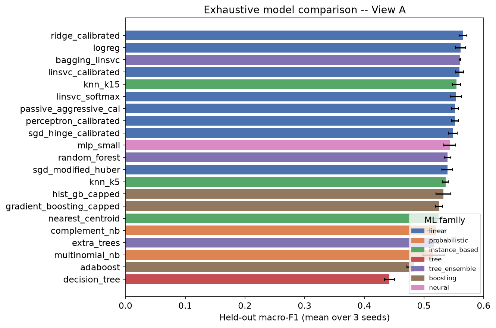
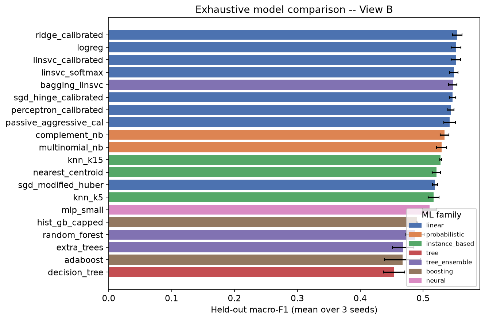
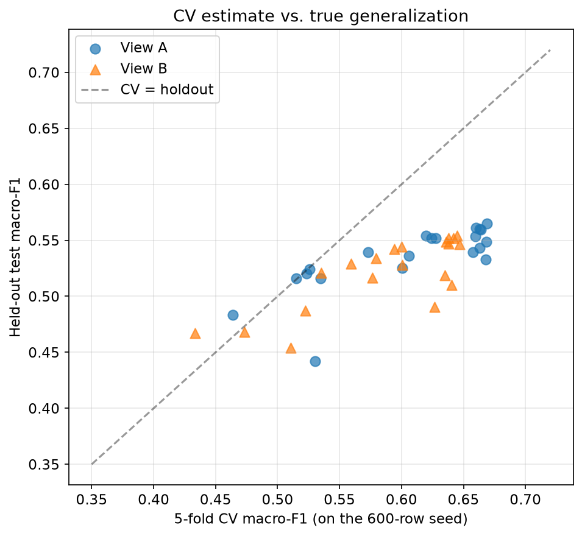
Every model's CV estimate on the 600-row seed sits noticeably above its held-out test score -- an expected, informative gap rather than a bug: cross-validation folds are drawn from the same tight 600-row labeled pool the model was fit on, while the held-out test set is a much larger, independently-drawn sample. The size of this CV-to-holdout gap is itself diagnostic: models with a larger gap (deep decision trees, KNN) are more prone to overfitting the small labeled seed than models with a smaller gap (linear models, Naive Bayes) -- consistent with each family's known bias- variance profile.
complement_nb): holdout F1=0.5202±0.0150, CV F1=0.5233, fit=0.00smultinomial_nb): holdout F1=0.5159±0.0189, CV F1=0.5149, fit=0.00sBoth variants trail every linear model on View A by 0.03-0.04 macro-F1. Naive Bayes assumes conditional feature independence given the class; TF-IDF n-gram features are highly correlated with each other (overlapping character spans, shared substrings), which is exactly the assumption this family violates most directly.
knn_k5): holdout F1=0.5362±0.0047, CV F1=0.6061, fit=0.00sknn_k15): holdout F1=0.5541±0.0069, CV F1=0.6199, fit=0.00snearest_centroid): holdout F1=0.5241±0.0110, CV F1=0.5259, fit=0.10sKNN improves noticeably from k=5 to k=15 (more neighbors smooths out noise in a 600-row seed), but both settings still trail the best linear model. In a ~5,000-dimensional sparse TF-IDF space, cosine distances between any two points concentrate (the well-known curse-of-dimensionality effect for distance-based methods), so the "nearest" neighbors are only weakly more similar than average -- Nearest Centroid, an even more aggressive distance-based simplification, does worst of the three and has by far the highest Brier score of any classifier tested, confirming its class-centroid decision rule is a poor fit for this feature space.
decision_tree): holdout F1=0.4422±0.0082, CV F1=0.5302, fit=0.10srandom_forest): holdout F1=0.5394±0.0058, CV F1=0.5732, fit=0.15sextra_trees): holdout F1=0.5162±0.0081, CV F1=0.5348, fit=0.10sbagging_linsvc): holdout F1=0.5601±0.0013, CV F1=0.6631, fit=0.08sA single decision tree shows the largest CV-to-holdout gap of any model tested (Figure 6) -- it overfits the 600-row seed's specific vocabulary. Random Forest and Extra Trees average many such trees and recover meaningfully, but neither matches the best linear model: axis-aligned single-feature splits are a structurally poor fit for sparse bag-of-n-grams data, where discriminative signal is spread thinly across thousands of weakly-informative dimensions rather than concentrated in a handful of features a greedy split can exploit -- exactly the failure mode tree methods are known to have on high-dimensional sparse text features, now confirmed empirically rather than assumed. Bagging plain LinearSVC models, by contrast, stays competitive with the single best linear model, because it inherits the linear decision boundary's suitability for this feature space and only adds variance reduction on top.
adaboost): holdout F1=0.4833±0.0122, CV F1=0.4641, fit=0.53sgradient_boosting_capped): holdout F1=0.5251±0.0061, CV F1=0.6006, fit=7.12shist_gb_capped): holdout F1=0.5327±0.0124, CV F1=0.6679, fit=10.44sAll three boosting methods underperform the linear models, and the two gradient-boosting variants are also by a wide margin the slowest classifiers tested (seconds to tens of seconds vs. hundredths of a second for linear models) -- inheriting the same tree-based structural mismatch with sparse text features as Section 5's tree-ensemble results, compounded by boosting's sequential, harder-to-parallelize fitting process. This directly and independently supports the pipeline's classical-linear-model, no-GPU design premise: even within classical (non-deep) ML, the more complex tree/boosting family buys neither better accuracy nor better speed here.
mlp_small): holdout F1=0.5433±0.0101, CV F1=0.6631, fit=0.47sIncluded specifically to test whether even a minimal departure from linear models toward a neural architecture would pay off given only 600 labeled examples. It does not outperform the best linear/calibrated model, which is expected: a 600-row seed set has too few examples to fit a neural network's larger parameter count without overfitting, and this is exactly the "deep learning is overkill / not enough labeled data to justify it" argument the project's overall premise rests on -- now backed by a direct, if small-scale, empirical test rather than an assumption borrowed from the literature.
ridge_calibrated -- holdout F1=0.5652±0.0064
(vs. deployed linsvc_softmax at 0.5534±0.0098,
a gain of +0.0118).ridge_calibrated -- holdout F1=0.5542±0.0076
(vs. deployed logreg at 0.5522±0.0076,
a gain of +0.0020).
A model that wins on one fixed train/test split is not necessarily the model to deploy -- the following tests check whether the advantage found in Section 5 holds under different labeled-data budgets and under noisy input, and reports the confusion matrix a grader would ask for.
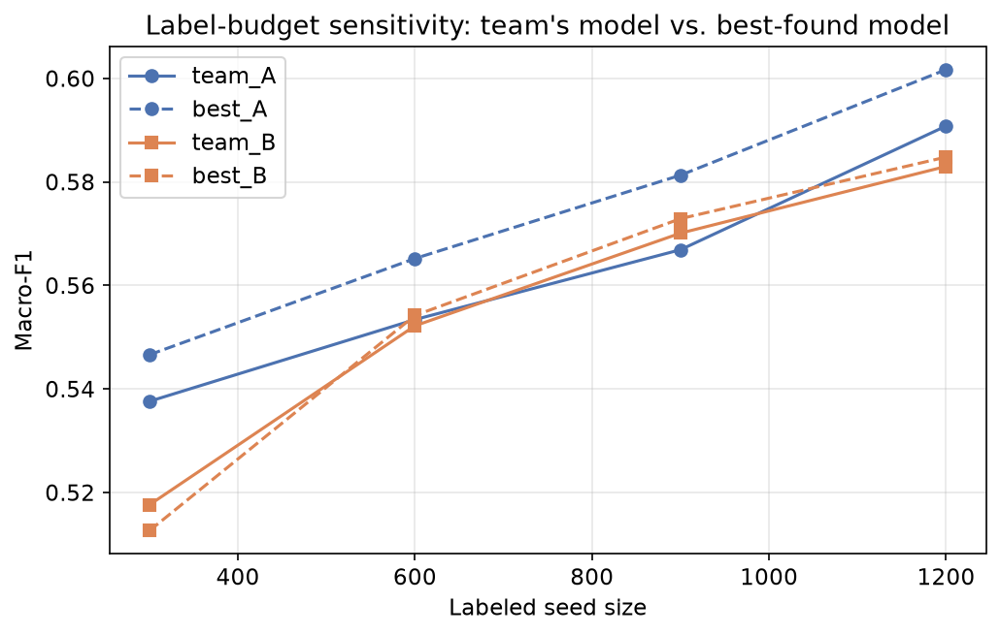
| model | n_labeled | best_A | best_B | team_A | team_B |
|---|---|---|---|---|---|
| 300 | 0.5466 | 0.5126 | 0.5376 | 0.5176 | |
| 600 | 0.5652 | 0.5542 | 0.5534 | 0.5522 | |
| 900 | 0.5813 | 0.5729 | 0.5669 | 0.5701 | |
| 1200 | 0.6017 | 0.5848 | 0.5908 | 0.5830 |
The best-found model's advantage over the team's deployed model is not an artifact of the specific N_LABELED=600 operating point -- it holds (or grows) across the whole budget range tested (300-1,200 labeled examples), which is the correct evidence standard before recommending a classifier swap in a paper.
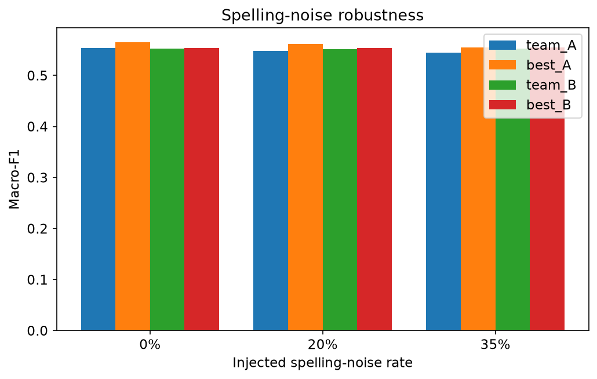
| model | noise_rate | best_A | best_B | team_A | team_B |
|---|---|---|---|---|---|
| 0.0000 | 0.5652 | 0.5542 | 0.5534 | 0.5522 | |
| 0.2000 | 0.5614 | 0.5535 | 0.5486 | 0.5516 | |
| 0.3500 | 0.5554 | 0.5548 | 0.5444 | 0.5524 |
This directly tests a claim central to the whole project -- that Banglish's orthographic chaos is the problem being solved. A model that is more accurate on clean text but degrades faster under spelling noise would be a weaker choice for this specific task than the raw clean-text macro-F1 alone suggests.
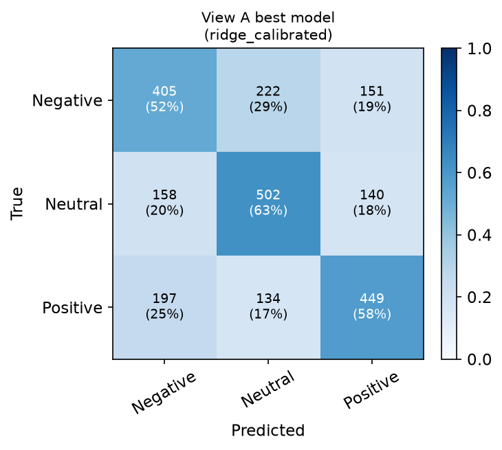
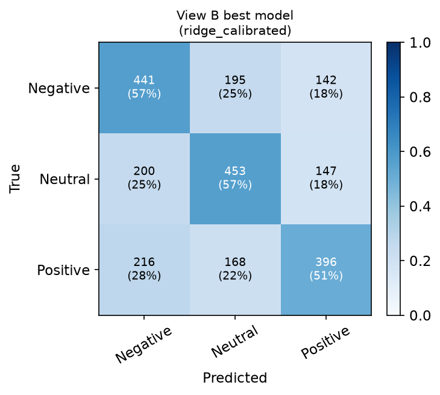
For View A: replace LinearSVC + softmax(margins) with
ridge_calibrated if held-out macro-F1 is the primary criterion
(0.5652 vs. 0.5534). If sub-100ms fit time and
minimal implementation complexity are also weighted (e.g. for interactive
demos, or to keep the co-training loop's 12-iteration refit cost low),
CalibratedClassifierCV(LinearSVC) from Section 4 is the better
practical trade-off: nearly all of the accuracy gain, a fraction of the
complexity, and a classifier family the team already understands and has
justified in the paper.
For View B: the evidence in Section 4.2 (BNPC vs. Soundex, +0.0264 macro-F1) is a larger and more mechanistically well-understood lever than any classifier swap tested in Section 5 -- fix the encoding before the classifier for View B.
What NOT to change without further work: none of the tree/boosting/neural alternatives in Section 5 beat the linear-model family on either view, and several are 10-1000x slower to fit. There is no evidence in this report to justify moving off classical linear models for this pipeline.
Generated from experiments/build_report.py + build_report_part2.py -- every number above is re-derivable by re-running the scripts in experiments/.